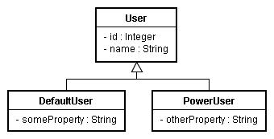
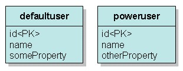

|
如果您採取的是物件模型的方式來設計程式，那麼繼承關係可能就會在您的程式設計中出現，然而關聯式資料庫的關聯模型與物件模型並不匹配，為了映射物件模型
與關聯模型，您可以採取三種策略，這邊先介紹最簡單的一種：Table per concrete class，也就是每一個類別就對應一個表格。 以實例來說明，如果您的程式中有以下的繼承關係：  以Table per concrete class的方式在關聯式資料庫中設計表格以作映射，就是直接對DefaultUser與PowerUser設計兩個表格與之對應，如下：  兩個表格沒有任何的關係，defaultuser與poweruser表格各自擁有id、name欄位，您可以如下建立表格： create table DefaultUser (
id integer not null auto_increment, name varchar(255), someProperty varchar(255), primary key (id) ) create table PowerUser ( id integer not null auto_increment, name varchar(255), otherProperty varchar(255), primary key (id) ) 而類別的設計如下：
package onlyfun.caterpillar;
package onlyfun.caterpillar;
package onlyfun.caterpillar; 在映射文件方面分別如下：
<?xml version="1.0" encoding="utf-8"?>
<?xml version="1.0" encoding="utf-8"?> 當然，別忘了在hibernate.cfg.xml中定義使用這兩個映射文件：
<?xml version="1.0" encoding="utf-8"?> 在儲存物件時很簡單，例如分別儲存DefaultUser與PowerUser的實例： DefaultUser defaultUser = new DefaultUser();
defaultUser.setName("Bush"); defaultUser.setSomeProperty("hu....hu..."); PowerUser powerUser = new PowerUser(); powerUser.setName("caterpillar"); powerUser.setOtherProperty("Bla...Bla..."); Session session = HibernateUtil.getSessionFactory().openSession(); Transaction tx = session.beginTransaction(); session.save(powerUser); session.save(defaultUser); tx.commit(); session.close(); 新增資料時，分別對兩個表格進行INSERT： Hibernate:
insert into PowerUser (name, otherProperty) values (?, ?) Hibernate: insert into DefaultUser (name, someProperty) values (?, ?) 至於查詢方面，視您想查詢哪個資料表，如果想同時查詢User類對應的所有資料，則可以如下： Session session = HibernateUtil.getSessionFactory().openSession();
Query query = session.createQuery("from onlyfun.caterpillar.User"); Iterator iterator = query.list().iterator(); while(iterator.hasNext()) { User user = (User) iterator.next(); System.out.println(user.getName()); } session.close(); 這個查詢會找出所有User之子類別所對應之資料，Hibernate實際上會使用以下的SQL進行查詢： Hibernate:
select poweruser0_.id as id1_, poweruser0_.name as name1_, poweruser0_.otherProperty as otherPro3_1_ from PowerUser poweruser0_ Hibernate: select defaultuse0_.id as id0_, defaultuse0_.name as name0_, defaultuse0_.someProperty as someProp3_0_ from DefaultUser defaultuse0_ 也就是Hibernate自動判斷User的繼承關係，並分別對DefaultUser與PowerUser對應的表格進行查詢。 文件雖然很長，但其實不寫這份文件也可以，還記得 基本查詢 中曾經提過，如果您直接使用"from java.lang.Object"這樣的HQL查詢，所得到的結果是資料庫中所有的資料，因為Object是Java中所有類別的父類別，寫這份文件只 是在加強您的印象，瞭解繼承關係映射最基本的方式而已。 來討論一下這個實現繼承對應的問題，首先，因為關聯在資料庫中通常是透過外鍵來實現，分別將子類別對應至個別表格，將不利於實現關聯性，例如 多 對一，想想如果有其它物件關聯至User，那麼它的關聯映射如何實現？ 再者，查詢時為了實現多型，如上面的查詢語法中可以看到的，必須分別對兩個表格進行查詢，再透過Hibernate來組合出多型的行為，而無法善用JOIN。 另外，每個表格中有一些語義相同的欄位，例如name欄位，當領域模型物件修改時，這些相同語義的欄位就要同時跟著修改，多個表格共用相同語義，將造成維護上的困難。 這個實現方式，基本上建議用於沒有關聯性，而且父類別將來不會修改的情況，或者不需要多型查詢的情況。 |